AI Academy · Level 3 · Grade 8 · Week 18 · Student lesson
Retrieval Augmented Generation
Learn to understand, design, build, test and explain AI systems responsibly.
Project: Verified Study Buddy
Before you start
Week 17: distinguish retrieving evidence from phrasing an answer.
Plan time to read, investigate and explain. Keep predictions separate from observations.
Student lesson · 1 of 18
Your mission
Start with the target: Explain the mechanism and terminology of building a grounded answer. Try the recall before opening notes.
Your learning target
I can explain the mechanism and terminology of building a grounded answer.
I can apply the stated procedure to a new case with a traceable result.
I can identify an assumption or limitation and design a revealing follow-up.
Remember before reading
Close your notes first. A rough first answer helps us choose the right starting point; it is not a score for your ability.
Without opening the old lesson, explain one key idea from Model Memory vs Retrieval. Give an example and a mistake that the idea helps you avoid.
Without opening the old lesson, explain one key idea from Source Quality. Give an example and a mistake that the idea helps you avoid.
Without opening the old lesson, explain one key idea from Speech and Audio Systems. Give an example and a mistake that the idea helps you avoid.
After trying, check the relevant lesson or ask your teacher. Change the part of your explanation that the evidence shows was wrong.
Week 18: Retrieval-Augmented Generation
RAG retrieves passages, then generates an answer grounded in them.
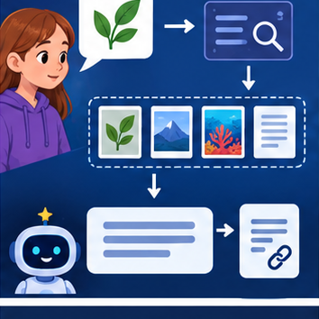
CREATOR MISSION
Trace query → retrieve → select → answer → cite.
Creator name and date:
Readiness for the connected explanation
Recall Ranking and retrieval evaluation. Explain why a recorded result needs its input conditions and evidence source before it can support a claim.
Readiness for Chunking and document structure
Recall Retrieval and indexing. Explain why a recorded result needs its input conditions and evidence source before it can support a claim.
Readiness for Lexical and vector retrieval
Recall Chunking and document structure. Explain why a recorded result needs its input conditions and evidence source before it can support a claim.
This week’s end goal
By the end, I can explain retrieval augmented generation using a traced example and a stated limitation.
Student lesson · 2 of 18
Notice the evidence
Investigate the supplied Retrieval Augmented Generation case. Separate observations, given facts and assumptions before choosing an explanation.
PICTURE STORY
Notice → Predict → Explain
Begin with visible evidence. Do not explain more than the picture and information support.
Start with this puzzle
MYSTERY
The learners must use retrieval-augmented generation to solve a problem. What information do they have? What decision or calculation do they make? What would count as evidence that it worked?
Three observations (what you can point to):
My prediction and the clue supporting it:
A closer explanation
A grounded answer connects each factual claim to evidence actually retrieved for the task. Retrieval success does not automatically make generation faithful.
Begin by writing the question the procedure is intended to answer. Identify the information already supplied, the information it will produce and the information still missing.
These are constructed classroom examples; they do not require live accounts, private records or an external service. Do not treat a plausible explanation as a measured outcome.
Apply the connected idea: Chunking and document structure
Chunking divides documents into retrievable units. A useful chunk retains enough structure to interpret a passage, including headers and exceptions.
Begin by writing the question the procedure is intended to answer. Identify the information already supplied, the information it will produce and the information still missing.
These are constructed classroom examples; they do not require live accounts, private records or an external service. Do not treat a plausible explanation as a measured outcome.
Apply the connected idea: Lexical and vector retrieval
Lexical retrieval matches terms; vector retrieval compares numerical representations. Each can fail when the representation misses the relevant distinction.
Begin by writing the question the procedure is intended to answer. Identify the information already supplied, the information it will produce and the information still missing.
These are constructed classroom examples; they do not require live accounts, private records or an external service. Do not treat a plausible explanation as a measured outcome.
Student lesson · 3 of 18
See how it works
Follow the mechanism for Retrieval Augmented Generation. Connect each labelled input, deciding step and result.
VISUAL MECHANISM
Input → Process → Output
Trace the information. At each stage, ask what changed and how you could test it.
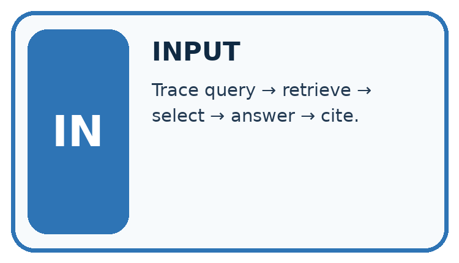
↓
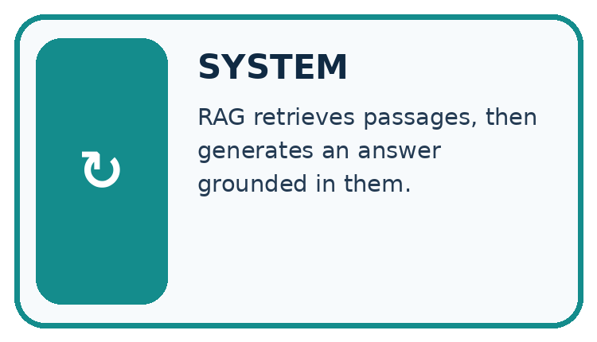
↓
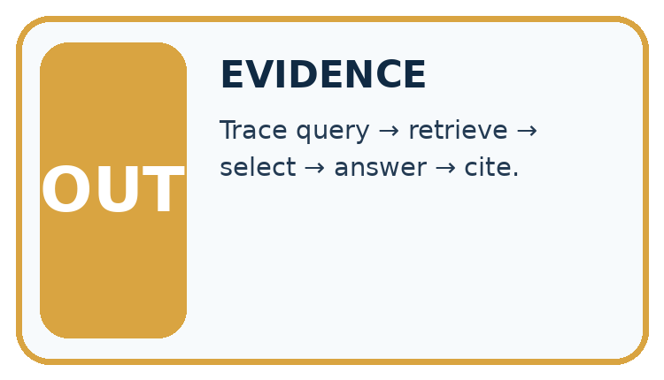
Which stage could fail even when the other two are correct? Explain:
A closer explanation
Build a claim-evidence table before final wording. Preserve source versions and qualifiers, omit unsupported claims or explicitly state the gap, then validate the answer against the table.
Building a grounded answer — evidence trace
Before applying the procedure, write its units, denominator or decision boundary where relevant. A partner should be able to repeat each step using the same inputs.
If a required input is absent or violates the stated contract, record that condition explicitly instead of quietly replacing it with a convenient value.
Apply the connected idea: Chunking and document structure
Give each chunk its document/version ID, section and offsets. Preserve qualifiers or link adjacent material. Overlap can repeat information; repeated chunks are not independent sources.
Chunking and document structure — evidence trace
Before applying the procedure, write its units, denominator or decision boundary where relevant. A partner should be able to repeat each step using the same inputs.
If a required input is absent or violates the stated contract, record that condition explicitly instead of quietly replacing it with a convenient value.
Apply the connected idea: Lexical and vector retrieval
For a toy lexical score, count distinct query terms present after lowercase exact-word matching. For a toy vector score use a stated dot product. Compare relevance using independent judgments, not score magnitude alone.
Lexical and vector retrieval — evidence trace
Before applying the procedure, write its units, denominator or decision boundary where relevant. A partner should be able to repeat each step using the same inputs.
If a required input is absent or violates the stated contract, record that condition explicitly instead of quietly replacing it with a convenient value.
Connect the picture and the explanation
Point to the input, the deciding step and the result in this week’s visual. Explain the same step in ordinary words. A picture helps when you can say what each part represents.
Student lesson · 4 of 18
Compare the cases
Compare the supplied cases for Retrieval Augmented Generation. Identify the detail that changes the conclusion.
The case to investigate
CASE GALLERY
Four Tests, Four Kinds of Evidence
A system is not understood until it survives more than one comfortable example.


The normal case
NORMAL CASE: predict and name evidence. BOUNDARY CASE: predict and name evidence.


Check missing information
MISSING INFORMATION: predict and name evidence. TRANSFER CASE: predict and name evidence.
Which case is most likely to reveal a hidden assumption? Why?
Change one thing in the pictured case
Change one thing
Change: The question asks exactly how long this ice takes to melt.
Predicted result
Prediction: Say that S4 does not provide a time.
Why the result follows
Reason: A general change of state does not determine a duration for an unspecified sample.
Student lesson · 5 of 18
Words that unlock the idea
Use the vocabulary of Retrieval Augmented Generation to explain a concrete decision, rather than only memorising definitions.
VOCABULARY LAB
Words You Can Use to Reason
A definition matters when you can recognize the idea, use it, and contrast it with a near-miss.
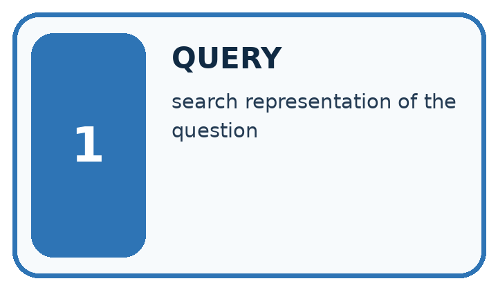
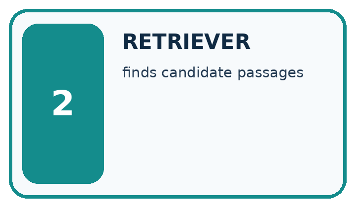
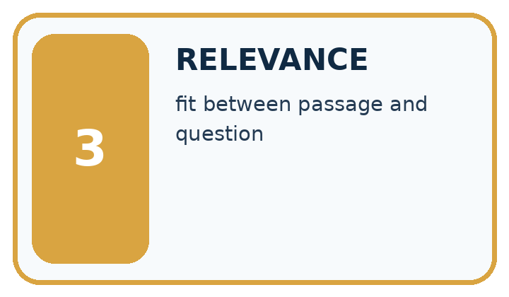
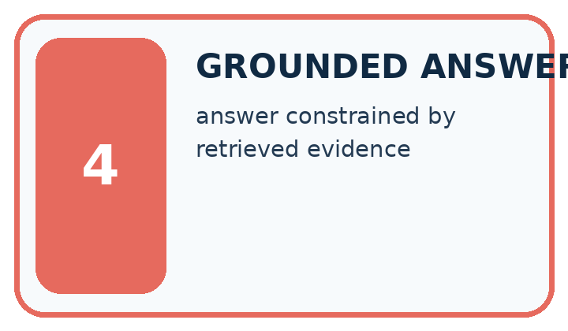
| Word | My own example | Not this / boundary |
|---|---|---|
| query | A question or search request used to obtain information. | |
| retriever | The component that searches for and selects source material relevant to a query. | |
| relevance | How directly information helps answer the stated question or perform the task. | |
| grounded answer | An answer whose factual claims are supported by identified evidence relevant to the question. |
Words used in the closer explanation
| Word | Meaning |
|---|---|
| Grounded claim | A claim supported by the available task evidence |
| Qualifier | A condition restricting a statement |
| Evidence table | A mapping from each claim to its supporting record |
Terms for Chunking and document structure
| Term | Meaning |
|---|---|
| Chunk | A retrievable unit from a document |
| Overlap | Content repeated in adjacent chunks |
| Offset | A location linking a chunk to the original source |
Terms for Lexical and vector retrieval
| Term | Meaning |
|---|---|
| Lexical match | Matching query terms to stored text |
| Vector retrieval | Ranking numerical representations using a declared similarity |
| Relevance judgment | An assessment of usefulness for the particular query |
Student lesson · 6 of 18
Follow a worked example
Follow the worked trace for Retrieval Augmented Generation, predict a step, then compare with its explanation.
WORKED EVIDENCE
Reason Step by Step
Predict first. Then check each step. A correct answer without visible reasoning is incomplete evidence.
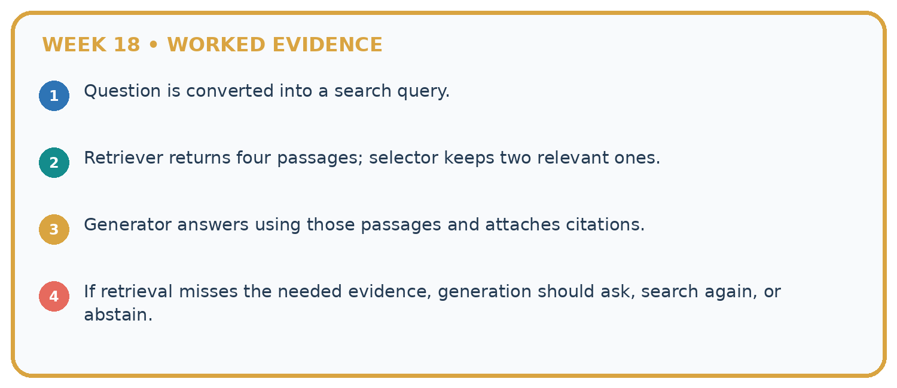
1. Question is converted into a search query.
2. Retriever returns four passages; selector keeps two relevant ones.
3. Generator answers using those passages and attaches citations.
4. If retrieval misses the needed evidence, generation should ask, search again, or abstain.
Recalculate, retrace, or restate the reasoning in your own representation:
CHECK Did the evidence answer the exact question? Did the total, path, or source record stay consistent?
A closer explanation
Current source P approves room C; Q lists C capacity 10. Draft says room C is approved, seats 10 and offers lunch.
Approval and capacity are supported by P and Q; lunch lacks evidence. A grounded answer reports the first two claims and does not invent lunch.
Worked explanation · Retrieval Augmented Generation
Compare the intermediate evidence with the final statement. Explain why each number or decision follows from the stated inputs.
The conclusion belongs to this scenario and procedure; changing the inputs, evaluation population or authority can change what it establishes. Retain the raw record so a later revision can be compared honestly.
Apply the connected idea: Chunking and document structure
A notice says capacity 20, followed by during maintenance capacity 8. Separate chunks contain each sentence but retrieval returns only the first.
The first chunk alone lacks the applicable exception. Retrieve the linked condition and determine maintenance status before asserting capacity 20.
Worked explanation · Retrieval Augmented Generation
Compare the intermediate evidence with the final statement. Explain why each number or decision follows from the stated inputs.
The conclusion belongs to this scenario and procedure; changing the inputs, evaluation population or authority can change what it establishes. Retain the raw record so a later revision can be compared honestly.
Apply the connected idea: Lexical and vector retrieval
Query terms red sensor. D1 text red sensor manual; D2 text red paint. Their lexical scores are 2 and 1. Vector query [1, 0], D1=[.4, .9], D2=[.8, .1].
Lexical ranks D1 first; dot product ranks D2 first (.8 versus .4). The supplied task relevance favours the sensor manual; vector ranking alone does not prove relevance.
Worked explanation · Retrieval Augmented Generation
Compare the intermediate evidence with the final statement. Explain why each number or decision follows from the stated inputs.
The conclusion belongs to this scenario and procedure; changing the inputs, evaluation population or authority can change what it establishes. Retain the raw record so a later revision can be compared honestly.
Learn from the worked case
Cover the result before checking it. Say what is given, choose the procedure, and follow one step at a time. Then uncover the result and explain your first mismatch. Ask why a step is allowed, not only what number it produces.
A pictorial worked case: Retrieval Augmented Generation
Turn a short science source into an answer with a visible claim-to-source map.
The facts we will use
Supplied facts
Approved note S4 says: ice is solid water; warming can melt ice into liquid water. No temperature or speed is supplied.
Supplied facts
All inputs and outcomes in this worked example are invented classroom data; no real model run is claimed.

Read the picture one step at a time
Why this result follows
Why the result follows
Read the picture in order. Both claims match S4. A claim that melting takes exactly two minutes would not match. The arrows show which recorded input or intermediate result each decision uses.
Explain the deciding step aloud before checking the changed case; pointing to the final answer alone does not show how it follows.
What this example does not establish
Keep the stated limit
This source-grounding exercise does not establish that every source is complete or scientifically authoritative.
Keep the stated limit
Read the labelled picture: Which part of the source supports a two-minute melting claim? Point to the relevant step in the picture, then write the changed result and the rule or evidence that supports it.
Keep the stated limit
Change one thing: The question asks exactly how long this ice takes to melt. Predict the result before checking the explanation. What remains the same?
Student lesson · 7 of 18
Find and repair a mistake
Find the unsupported step in the Retrieval Augmented Generation claim and explain a repair using the supplied evidence.
Find the first error
ERROR DETECTIVE
Compare → Diagnose → Repair
Do not patch the answer. Find the earliest unsupported assumption, wrong step, or weak evidence.
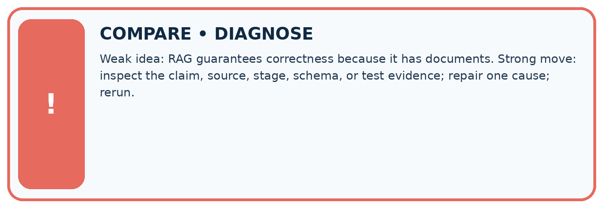
| Evidence record | Expected | Actual | Likely cause / next test |
|---|---|---|---|
| normal case | works | ||
| boundary case | stated rule | ||
| missing input | safe response | ||
| fresh transfer | generalizes |
Repair one cause. Why is this repair better than changing several things?
A closer explanation
Check the claim against the facts
Complete the supported workbook tasks before attempting W4 independently. Record any hints or help used. After feedback, use the teacher's fresh retry rather than copying the earlier answer.
For a project, select a relevant new case, predict the outcome from the declared rule and preserve the result alongside any revision.
Apply the connected idea: Chunking and document structure
Check the claim against the facts
Complete the supported workbook tasks before attempting W4 independently. Record any hints or help used. After feedback, use the teacher's fresh retry rather than copying the earlier answer.
For a project, select a relevant new case, predict the outcome from the declared rule and preserve the result alongside any revision.
Apply the connected idea: Lexical and vector retrieval
Check the claim against the facts
Complete the supported workbook tasks before attempting W4 independently. Record any hints or help used. After feedback, use the teacher's fresh retry rather than copying the earlier answer.
For a project, select a relevant new case, predict the outcome from the declared rule and preserve the result alongside any revision.
Student lesson · 8 of 18
Practise together
Practise Retrieval Augmented Generation with support, then explain the deciding step in your own words.
LOGIC STUDIO
Specify Before You Run
Prompts, schemas, retrieval, tool calls, and code are inspectable parts of one AI product.

SET task, audience, constraints, output_schema LOAD approved_context or retrieval_result CALL model or allowed_tool VALIDATE fields, claims, citations, and safety IF evidence missing: ask, retrieve, or abstain RETURN useful output + source trail + limitations
Trace one input. Which line changes the state or chooses a path?
A closer explanation
Grounding requires support for the exact claim, including conditions; attaching a source name is insufficient.
A useful check asks what would make the reasoning fail. Distinguish a failure to execute the declared procedure from a weakness in the procedure itself.
The first may require a correction; the second requires an explicitly revised method and new evidence. Preserve unsuccessful cases so an improved result cannot hide the original problem.
Apply the connected idea: Chunking and document structure
Smaller chunks can improve selectivity while losing necessary qualifiers; chunk size alone is not retrieval quality.
A useful check asks what would make the reasoning fail. Distinguish a failure to execute the declared procedure from a weakness in the procedure itself.
The first may require a correction; the second requires an explicitly revised method and new evidence. Preserve unsuccessful cases so an improved result cannot hide the original problem.
Apply the connected idea: Lexical and vector retrieval
Similarity and relevance are different quantities; exact terminology, metadata and permissions may be necessary.
A useful check asks what would make the reasoning fail. Distinguish a failure to execute the declared procedure from a weakness in the procedure itself.
The first may require a correction; the second requires an explicitly revised method and new evidence. Preserve unsuccessful cases so an improved result cannot hide the original problem.
Practise with less help: Trace the worked case
Use workbook W2 for the connected example “Building a grounded answer”. First fill the input and rule boxes. Try the middle steps before asking for a hint. After a hint, try the next step yourself.
| Plan | Do | Check |
|---|---|---|
| What is given? Which rule or procedure applies? | Record each intermediate step. | Does the result follow? What remains unknown? |
Explain your trace to a partner. Your partner points to one step to check. Swap roles on the next case. Each person writes their own explanation.
Check your reasoning
Use the worked case for Building a grounded answer. Proposed explanation: “The worked result establishes every future case”. Decide whether this explanation is supported.
Point to the step or supplied fact that decides; explain your repair if needed.
Answer on your own before discussion. If you are unsure, say which step you need help with.
Practise the connected topic: Chunking and document structure
Use its named workbook W2. Identify the given inputs, try the middle steps with less help, then explain your trace. Check this claim before group discussion: The worked result establishes every future case
Practise the connected topic: Lexical and vector retrieval
Use its named workbook W2. Identify the given inputs, try the middle steps with less help, then explain your trace. Check this claim before group discussion: The worked result establishes every future case
Explain the picture
Which part of the source supports a two-minute melting claim? Point to the relevant step in the picture, then write the changed result and the rule or evidence that supports it.
This is supported practice. Keep the separately named independent case for an attempt before feedback.
Student lesson · 9 of 18
Run the investigation
Investigate Retrieval Augmented Generation. Record the prediction, actual observation or labelled paper trace, explanation and next test separately.
EVIDENCE LAB
Predict → Test → Record → Explain
Keep expected and actual results separate. Surprises are useful data when recorded honestly.
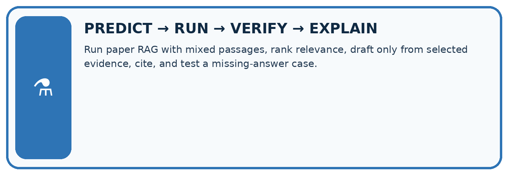
Run paper RAG with mixed passages, rank relevance, draft only from selected evidence, cite, and test a missing-answer case.
| Test / input | Prediction | Actual | Evidence / calculation | Change or keep? |
|---|---|---|---|---|
| normal | ||||
| boundary | ||||
| missing | ||||
| fresh transfer |
What did the hardest test teach you that the normal test did not?
Plan → try → check
Before trying: what do I expect, and why? While trying: which step could first go wrong? Afterwards: what did I actually observe, and what should change? Keep “not run” if you only traced the procedure.
Student lesson · 10 of 18
Build your understanding
Move from recall to tracing, diagnosis and transfer in Retrieval Augmented Generation. Explain why each step is justified.
MASTERY
From Knowing the Word to Owning the Idea
Move upward only when you can produce evidence without copying the worked example.

1 • NAME: Define the concept without repeating the textbook.
2 • TRACE: Show the information, state, branch, calculation, or evidence path.
3 • APPLY: Solve a different example independently.
4 • CHALLENGE: Find a boundary case, counterexample, or unfair outcome.
5 • EXPLAIN LIMITS: Say when the result should not be trusted or used alone.
My strongest evidence of independent understanding:
Student lesson · 11 of 18
Connect your project
Apply this week’s idea to Verified Study Buddy. Keep an annotated decision and the evidence supporting it.
CUMULATIVE PROJECT
Verified Study Buddy
Every week adds one inspectable piece. The system must show how it reached a result.
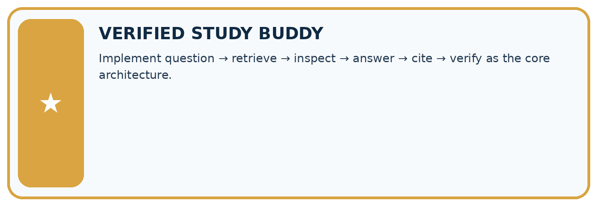
THIS WEEK’S CHECKPOINT Implement question → retrieve → inspect → answer → cite → verify as the core architecture.
Trace the system
SYSTEM MAP Learner need → prompt/schema → approved sources/retrieval → model/tool → structured answer → verification → human decision
What will you add, change, or verify in the project this week?
What should remain under human control?
Responsible design
RESPONSIBLE DESIGN Collect only necessary information. Show uncertainty and limits. Never confuse fluent output with verified truth.
Evidence for your project
For your Verified Study Buddy, save the input, procedure, observed result and limitation of this check.
Label this worked example as practice; use a different, previously unreviewed case when checking independent understanding.
Student lesson · 12 of 18
Show what you know
Use a genuinely new case for independent evidence. Previously discussed examples remain practice; use the separately named independent case before feedback.
Independent evidence
INDEPENDENT MASTERY PROOF
Explain • Transfer • Test • Defend
Complete this page without copying the worked example. Your reasoning matters more than decoration.
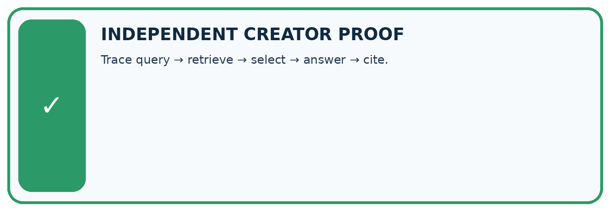
Try a more demanding case
CHALLENGE Trace query → retrieve → select → answer → cite.
1. My fresh example, trace, calculation, or design:
2. My evidence that it works (include a boundary or missing-data case):
3. One limitation, fairness concern, or situation needing human review:
Check your explanation
SELF-CHECK □ I explained the mechanism □ I used evidence □ I tested a fresh case □ I named a limitation □ I can answer ‘why?’
Student lesson · 13 of 18
Study a complete case
Revisit the complete Retrieval Augmented Generation case for supported practice. Repeated examples do not become fresh assessments.
Week 18 Worked case
Use the supplied details to practise the weekly concept before attempting the independent question. This case extends the illustrated lesson.
The situation
Note A says library opens at 9. Note B says returns go in the blue box.
The question
Answer opening time with evidence.
Worked explanation
Answer 9 with note A. Retrieval supplies evidence and generation phrases it. B does not support opening time.
Explain it in your own words
Which detail supports the answer, and why does it matter?
Trace the supplied case visually
Use the passage that answers the question
| Evidence or stage | Value or result |
|---|---|
| Question | When does the library open? |
| Retrieve | Note A says opens at 9 |
| Compose | Library opens at 9 |
| Verify | Note A supports opening time |
Note A says library opens at 9. Note B says returns go in the blue box.
Answer opening time with evidence.
Answer 9 with note A. Retrieval supplies evidence and generation phrases it. B does not support opening time.
Student lesson · 14 of 18
Try a new case independently
Attempt the reserved new case before feedback. Record support; the earlier examples below remain additional practice.
Independent case: Apply a new case independently
Source A approves room H; B lists H capacity 7, except maintenance limit 4. Maintenance status is unknown. Write a grounded response.
Attempt this case before feedback. Record any help. Earlier examples below are further practice; a case already practised with feedback cannot establish fresh transfer.
Week 18 Independent application
Close the worked explanation. Apply the idea to this different question without copying.
A retrieved passage says the club meets Tuesday; it says nothing about cost. The assistant answers Tuesday, free entry. Which part is grounded and what should replace the unsupported part?
My answer, with a trace, calculation or supporting evidence
Create and test
Change one relevant detail. Predict the result before testing. Include a boundary or missing-information case when it helps reveal a limit.
My changed input and expected result
Connect to your project
Implement question → retrieve → inspect → answer → cite → verify as the core architecture.
The evidence I will keep
Your teacher has the independent answer and scoring criteria. Complete the matching workbook week to keep your practice evidence together.
Transfer practice from the original programme
Sources: A='Library opens 9'; B='Cafe opens 8'; C='Library closes 5'. A question asks when the library opens. The retriever returns only B and C. What should the generator do?
Use feedback to improve
Attempt the independent case before hints. Record whether you worked alone, used a hint or followed a model. After feedback, fix the first unsupported step and explain why it changed.
A later check uses a changed case, not a copied answer.
Student lesson · 15 of 18
Your lesson route
Use this map to navigate Retrieval Augmented Generation, connect the goals to tasks and keep one evidence record for each attempt.
Start with this question: Turn a short science source into an answer with a visible claim-to-source map.
| By the end, I can | How I will show it |
|---|---|
| Explain the mechanism and terminology of building a grounded answer | Explain the deciding step, show a trace or test, and state one limit. |
| Apply the stated procedure to a new case with a traceable result | Explain the deciding step, show a trace or test, and state one limit. |
| Identify an assumption or limitation and design a revealing follow-up | Explain the deciding step, show a trace or test, and state one limit. |
Remember → watch and explain → try with help → investigate → try independently → keep project evidence. Your teacher may spread this lesson across several classes.
Keep your first prediction. Compare it with what the evidence shows and explain any change.
Student lesson · 16 of 18
Finish and return
Explain Retrieval Augmented Generation without notes, identify a remaining question and plan a later check with a changed case.
Close your notes. Explain this goal in your own words: Explain the mechanism and terminology of building a grounded answer
If you are unsure, return to the worked picture and explain one arrow. If you are ready, change an input or assumption and justify your prediction.
Save your workbook evidence. At the next review, try a different case before opening your old answer.
Student lesson · 17 of 18
Supported practice, repair and portfolio
Attempt supported questions before using hints or feedback. Review a missing building block, then keep the completed work.
Use this supported practice once, in the browser or on paper. Keep the reserved independent assessment for a separate first attempt before teacher feedback.
Turn a short science source into an answer with a visible claim-to-source map.
Practice 1: explain the deciding evidence
Which labelled step matches this detail? Both claims match S4. A claim that melting takes exactly two minutes would not match.
1. Check each claim
2. Draft two claims
3. Read source
Hint · try first
Hint if needed: Read the steps in the pictorial case. Match the supplied detail to the stage that performs or records it.
Feedback · compare after trying
After your attempt, compare with the supported explanation: Check each claim Both claims match S4. A claim that melting takes exactly two minutes would not match. Read the picture in order. Both claims match S4.
A claim that melting takes exactly two minutes would not match. The arrows show which recorded input or intermediate result each decision uses.
Explain the deciding step aloud before checking the changed case; pointing to the final answer alone does not show how it follows.
Practice 2: explain the deciding evidence
Changed case · predict first
Changed-case practice: The question asks exactly how long this ice takes to melt. Which conclusion is supported by the supplied facts?
1. We can decide the result without examining the changed input or the procedure.
2. This one example guarantees correct results for every future input.
3. Say that S4 does not provide a time.
Hint · try first
Hint if needed: Use the changed condition and the deciding step in the pictorial trace. The answer must say what follows from those facts.
Feedback · compare after trying
After your attempt, compare with the supported explanation: Say that S4 does not provide a time. A general change of state does not determine a duration for an unspecified sample.
Repair a missing building block
Review Model Memory vs Retrieval (ai-3/17). Goal: Explain the mechanism and terminology of retrieval and indexing. Short practice: Why can the assistant not certify 15: 00 when the notice is missing?
Point to the relevant step in the picture, then write the changed result and the rule or evidence that supports it.. Return to this week and explain what you changed.
Review Source Quality (ai-3/15). Goal: Explain the mechanism and terminology of conflicting and time-sensitive sources. Short practice: Which source fields must be checked before answering day 9?.
Return to this week and explain what you changed.
Review Speech and Audio Systems (ai-3/12). Goal: Explain the mechanism and terminology of speech pipelines and multimodal evidence.
Short practice: Which stage was initially wrong, and which stage was correctly operating on a wrong input?. Return to this week and explain what you changed.
Keep your completed work
Use Download completed work in the hosted lesson to export your answers, reflections, practice feedback and code-run evidence. Open the HTML copy to read or print it.
Drafts stay in this browser when storage is available; clear drafts on a shared device.
Student lesson · 18 of 18
Visual concept journey
Explain each Retrieval Augmented Generation graphic using its labels, deciding evidence and relevant limitation.
01. Retrieval Augmented Generation: the case

Turn a short science source into an answer with a visible claim-to-source map. Supplied facts: Approved note S4 says: ice is solid water; warming can melt ice into liquid water. No temperature or speed is supplied.
All inputs and outcomes in this worked example are invented classroom data; no real model run is claimed.
Point to the given fact that matters most. Explain why it matters.
02. Follow the deciding steps

Read source: S4 supports the material identity and the solid-to-liquid change. → Draft two claims: Draft: ice is solid water; warming can turn it into liquid water. → Check each claim: Both claims match S4.
A claim that melting takes exactly two minutes would not match.
Point to each numbered stage and explain which recorded input it uses.
03. Building a grounded answer — evidence trace

Building a grounded answer — evidence trace. Current source P approves room C; Q lists C capacity 10. Draft says room C is approved, seats 10 and offers lunch. | Build a claim-evidence table before final wording.
Preserve source versions and qualifiers, omit unsupported claims or explicitly state the gap, then validate the answer against the table. | Approval and capacity are supported by P and Q; lunch lacks evidence.
A grounded answer reports the first two claims and does not invent lunch.
Read the labels and values. Explain the relationship the model shows.
04. Change one thing. Trace what follows.

Original case: Both claims match S4. A claim that melting takes exactly two minutes would not match. Changed condition: The question asks exactly how long this ice takes to melt.
Expected result: Say that S4 does not provide a time. Reason: A general change of state does not determine a duration for an unspecified sample.
Predict before checking the worked changed-case result. Name what changed and what the supplied facts allow you to conclude.
05. Connect the explanation to its limit

Read the picture in order. Both claims match S4. A claim that melting takes exactly two minutes would not match. The arrows show which recorded input or intermediate result each decision uses.
Explain the deciding step aloud before checking the changed case; pointing to the final answer alone does not show how it follows.
Limit: This source-grounding exercise does not establish that every source is complete or scientifically authoritative.
Explain the case, then point to a limit on the claim.
06. Make the idea visible in your project

For your Verified Study Buddy, save the input, procedure, observed result and limitation of this check.
Label this worked example as practice; use a different, previously unreviewed case when checking independent understanding. Draw your input, deciding step, result and limit.
Supported question: Which part of the source supports a two-minute melting claim? Point to the relevant step in the picture, then write the changed result and the rule or evidence that supports it.
Draw your project trace and justify the deciding step using evidence.